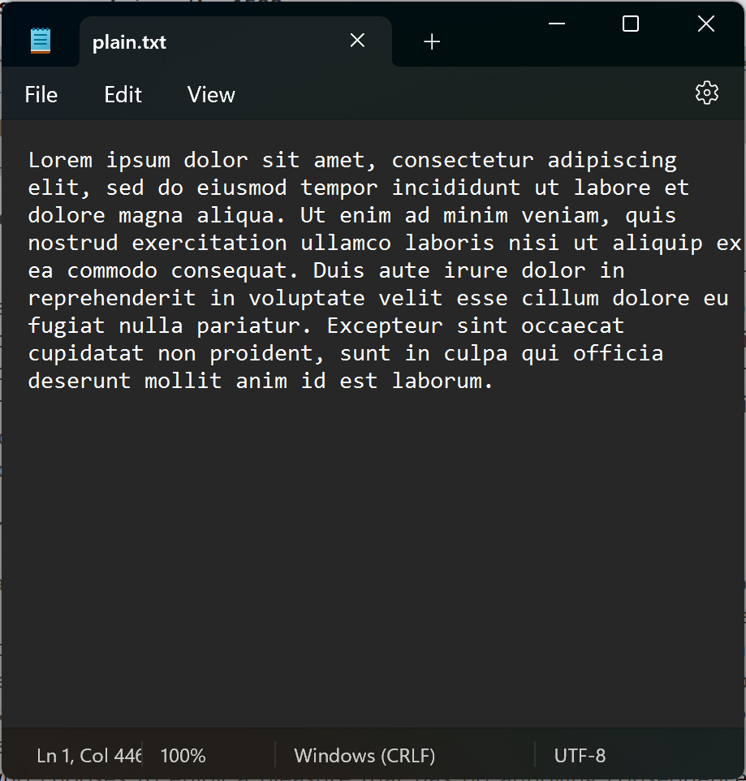
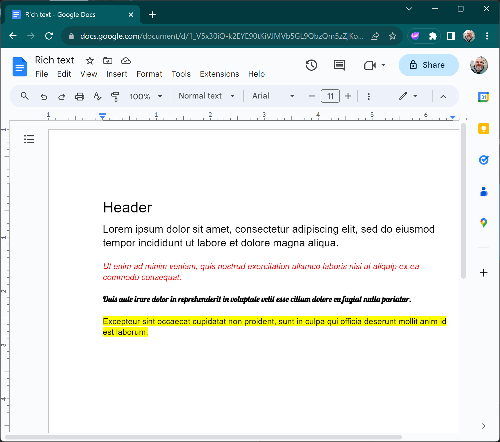

The Craft
of Plain Text
IDE Development Course
Andrew Vasilyev
Licensed under CC BY-NC-SA 4.0
Today's Agenda
- Understanding Plain Text
- Understanding Plain Text Editing
- Understanding Text Rendering
- Understanding Text Editor Workflow
What is plain text?
What is Plain Text?
Plain text refers to unformatted textual data. Unlike rich text, which can include styling and other elements, plain text consists solely of character data. An example of plain text is a simple `.txt` file containing the sentence "Hello, World!" without any bolding, italics, or other embellishments.
Plain Text vs Rich Text
Comparison: While plain text only contains raw, unformatted characters, rich text can include formatting such as font styles, sizes, colors, and more. Rich text documents can also embed objects like images and tables.
- Plain Text Example: "Hello, World!" in a `.txt` file.
- Rich Text Example: "Hello, World!" in bold, italic, and underlined in a `.docx` or `.rtf` file, possibly with an accompanying image.
Plain Text vs Rich Text
Plain text
Rich text
RTF: Example of rich text format
Developed by Microsoft in the mid-1980s, RTF (Rich Text Format) is a proprietary document file format that supports text formatting, such as bold and italics, as well as graphics. Unlike plaintext, RTF retains style and formatting information, making it suitable for exchanging formatted documents between applications and platforms. While not as ubiquitous today, it has played a significant role in the evolution of document interchange formats.

Benefits of Plain Text
- Universality: Almost every system can read and display plain text, making it universally accessible.
- Compactness: Without formatting and extra metadata, plain text files are generally smaller in size.
- Transparency: The content is directly visible, without hidden data or metadata.
- Flexibility: It can be easily processed by many tools and software, from simple text editors to complex algorithms.
- Stability: As a long-standing standard, plain text doesn't suffer from software-specific incompatibilities.
Limitations of Plain Text
- No Formatting: Plain text cannot represent styles like bold or italic.
- Limited Structuring: Without special conventions, plain text can't easily represent tables, columns, or other structured data.
- No Media Embedding: Images, videos, or audio cannot be embedded within plain text.
- Character Set Limitations: Depending on the encoding, certain characters might not be representable.
Evolution of Text Editors
The Typewriter Era
The typewriter marked the beginning of mechanical text editing, offering a more efficient way to write than handwriting. Originally invented in the early 1870s, it remained a staple in offices and homes well into the 20th century.

Punch Cards
Punch cards were one of the earliest methods used for programming and data storage, especially in early computing. A sequence of punched holes represented data or commands. They were widely used from the early 1900s until the 1970s.

Teletype Systems
Before the advent of video displays, teletype systems were used as a means of entering and displaying text data in real-time. These machines were often connected to early mainframe and minicomputers and marked the transition to electronic text editing.

The Birth of ED
ED (short for "editor") was one of the first command-line text editors, created in the early 1970s. Designed by Ken Thompson for Unix systems, ED set the foundation for many text editors that followed. While primitive by today's standards, it introduced key editing concepts still used.

First Display Text Editors
With the advent of video display terminals in the late 1970s and early 1980s, text editors evolved to show text directly on a screen rather than print them on paper. Editors like "vi" (on Unix) and "WordStar" (on DOS) emerged, offering users a visual interface to interact with their documents. They marked a significant shift from command-line based editors, providing real-time feedback and enhancing user experience.

Emacs: The Extensible Editor
Developed in the mid-1970s by Richard Stallman, Emacs is more than just a text editor; it's an extensible and customizable editing environment. With its unique system of key bindings, and its own built-in programming language (Emacs Lisp), users can customize and extend their editing experience. It is renowned for its powerful features, enabling tasks from editing text to reading emails or even playing games, all within the same interface.

WYSIWYG Text Editors for rich text
WYSIWYG editors revolutionized the world of text editing in the late 1980s and early 1990s. Instead of users having to remember markup or commands, these editors allowed for direct manipulation of the text and its appearance. With WYSIWYG, the display on the editor closely matched the final output.

Anatomy of plain text
The Underlying Representation
In computers, everything is stored as binary data – sequences of 0s and 1s. Text is no exception. Each character is mapped to a unique number using a character encoding, like ASCII. For example, in ASCII encoding, the letter 'A' is represented as the number 65, which in binary is '01000001'. When we type a letter, the computer processes its binary representation, but displays the character we recognize, allowing us to interact using familiar symbols.

Origins of ASCII
ASCII, standing for American Standard Code for Information Interchange, was developed in the early 1960s by the American National Standards Institute (ANSI). Designed as a standardized character encoding for electronic communication, ASCII represents text in computers, telecommunications equipment, and other devices that use text. Originally, it was created to address the compatibility issues between different types of data processing equipment.

The ASCII Table

Control Characters
Control characters, often non-printable and invisible, are special characters used in text to represent non-graphic instructions. Originating from the early days of telegraphy and teletype, they served to control the behavior of devices or instruct them to perform specific operations. In character encodings like ASCII, control characters occupy the first 32 codes (from 0 to 31).

Examples of Control Characters
- Carriage Return (CR): Moves the caret to the start of the line without advancing to the next line.
- Line Feed (LF): Advances the caret to the next line without returning to the start.
- Tab: Moves the caret to the next tab stop.
- Escape: Often used to begin sequences of characters that represent special commands.
- Backspace: Moves the caret backwards one space.
Why Different Encodings?
Text encodings are essential because they define how characters are represented as numbers in computers. As the digital world expanded, the need arose for a system that could accommodate more than just English letters and symbols. Different regions and languages necessitated their own encoding schemes, leading to a plethora of text encodings tailored to various linguistic and technical needs.

Introduction to Codepages
Codepages are sets of characters for a particular encoding. In the era before Unicode, different regions used different codepages to represent their languages. For instance, Western European languages might use the ISO 8859-1 codepage, while Cyrillic-based languages might use ISO 8859-5. Switching between codepages was often necessary to display multiple languages correctly.

KOI-8R Encoding
KOI-8R (Kod Obmena Informatsiey-8 Rossiya) is an 8-bit character encoding, designed to cover Russian, which uses the Cyrillic script. Introduced in the 1980s, KOI-8R became one of the main encodings used in Unix-based systems in Russia. An interesting feature of KOI-8R is its resilience to transmission errors: if a single bit is lost, a Cyrillic letter turns into another Cyrillic letter.

Popular Modern Encoding Formats
- UTF-8: A universal character encoding that can represent any character in the Unicode standard. Efficient for English text.
- UTF-16: Uses 16-bits for each character, making it useful for scripts with larger character sets.
- UTF-32: Uses 32-bits for each character, allowing direct access to Unicode code points.
Text Editing under the Hood
Why Speed Matters in Text Editing
The efficiency of text operations directly impacts user productivity and satisfaction. Delays or lags during typing, searching, or other text-related tasks can disrupt the user's flow and concentration. As documents grow in size, the demand for instant response and smooth navigation becomes even more crucial. In competitive environments, the speed of a text editor can be the difference between a user adopting or abandoning the software.
Typical Operations in Plain Text Editing
- Insertion: Adding characters or words at a specific position.
- Deletion: Removing characters, words, or lines from the text.
- Search: Locating specific words, phrases, or patterns within the document.
- Replace: Swapping out specific characters or words with others.
- Navigation: Moving the cursor or focus to different parts of the document.
- Selection: Highlighting specific portions of text for other operations.
- Undo/Redo: Reversing or re-applying recent changes.
- Copy/Cut/Paste: Duplicating or moving text within the document or between documents.
Text representation: Array of Chars
val text : CharArray = CharArray(1024)
In its simplest form, text can be represented as an array of characters, where each element corresponds to a specific character. This approach works well for small texts and offers constant-time access to any character. However, insertions and deletions can be expensive operations, especially in large documents, as they may require shifting many elements.
Text representation: Array of Lines
val text : Array<String> = Array<String>(1024)
Text can also be represented as an array of lines, where each element is a string or an array of characters representing a single line. This structure eases operations like line insertions and deletions. However, operations within a line still face the same challenges as the array of chars representation.
The Need for Specialized Structures
While basic arrays offer straightforward text representation, they often struggle with dynamic editing needs. Insertions, deletions, and other modifications can become computationally expensive, especially in large documents. This inefficiency necessitates specialized data structures that optimize these operations, ensuring that text editors remain responsive and efficient even as the size and complexity of the text grows.
Text representation: Gap Buffer
The gap buffer is a dynamic array with a "gap" or empty space. Cursor movements and text
edits occur at the gap's location. When characters are inserted, the gap size decreases, and
when they're deleted, the gap size increases. The gap moves with the cursor, and while this
requires moving the characters around, it ensures that insertion at the cursor location is
always fast. Gap buffers are used in popular editors like Emacs.
Read
more

Text representation: Piece Table
The piece table is a data structure that maintains original text and its modifications in
separate buffers. Instead of editing the original content, modifications are stored
separately, and a table keeps track of "pieces" of the content to construct the current
state of the text. This approach makes operations like undo and redo very efficient. Piece
tables were used in early word processors like Word for DOS.
Read more

Text representation: Piece Tree and Rope
Ropes and piece trees are a binary-tree-based data structures where each leaf node holds a
string fragment.
Trees efficiently handle operations like insertion, deletion, and concatenation by
manipulating tree nodes rather
than characters. Ropes have been employed in editors like Xi, while piece tree is utilized
by VS Code.
Piece
tree
Rope

Array of Chars
Pros:
- Simple implementation
- Constant-time access
Cons:
- Expensive insertions/deletions
Array of Lines
Pros:
- Eases line operations
Cons:
- Challenges with operations within a line
Gap Buffer
Pros:
- Efficient cursor-based operations
- Fast insertions at cursor location
Cons:
- Movement of characters around the gap
Piece Table
Pros:
- Efficient undo/redo
- Keeps track of original and modified content
Cons:
- May have memory overhead
Piece Tree and Rope
Pros:
- Efficient for large texts
- Fast insertions, deletions, and concatenations
- Immutability
Cons:
- Complex implementation
Text Rendering
What is Text Rendering?
Text rendering is the process of displaying text in a visually readable form on a digital screen. It involves a series of steps, including layout calculations, glyph selection, and pixel rendering, which collectively bring text from a font file to your screen.

Fonts: Types and Styles
- Typefaces vs. Fonts: Typeface is the design; Font is the implementation.
- Font Styles: Includes regular, bold, italic, etc.

Bitmap Fonts
Bitmap fonts, sometimes known as raster fonts, are fonts in which each character is represented as an arrangement of pixels in a grid. Each glyph is essentially a bitmap image, predefined for a specific size and resolution.

Bitmap Fonts
- Fixed Size: Each bitmap font is designed for a specific size. Scaling can result in jagged or blurry edges.
- Pixel Perfect: At their intended size, bitmap fonts are crisp and clear, especially useful for screens with low resolution or specific rendering needs.
- Limitations: Lack of flexibility in scaling and transformations compared to vector fonts.
- Use Cases: Early computer displays, retro video game graphics, and specialized screen applications.
Vector Fonts
Vector fonts, also known as outline fonts, are fonts where each character is defined using geometric shapes like curves and lines. Unlike bitmap fonts, which represent characters using a grid of pixels, vector fonts use mathematical equations to describe the contours and paths that make up each glyph. The most common vector font formats include TrueType (TTF) and PostScript Type 1.

Vector Fonts
- Scalability: Vector fonts can be resized without any loss of quality, ensuring sharp and clear characters at any size.
- Flexibility: Can be easily transformed (rotated, skewed) while maintaining clarity.
- Print Quality: Provides smoother edges, especially for large print sizes.
- File Size: Generally, smaller file sizes than bitmap fonts for the same character sets.
Text Line Rendering
Rendering a line of text isn't as straightforward as merely displaying glyphs side by side. The process takes into account various factors such as kerning, baseline alignment, and text directionality. Properly rendered lines ensure text is readable, aesthetically pleasing, and maintains the intended meaning.

Text Scrolling & Viewport
The viewport is the visible area of a text document or any other digital content. As documents exceed the size of the viewport, scrolling becomes necessary to navigate through the content. Effective text scrolling is crucial for user experience, allowing seamless exploration while keeping the content readable and well-rendered.

The Magic of Anti-aliasing
Anti-aliasing techniques smooth out jagged edges in rendered text by subtly coloring the pixels around the edges. This makes the text easier to read and more visually pleasing.

Conclusion
Text Editor Workflow
- Initialize Data Structure: Load the text into a suitable data structure for efficient editing.
- Display Initial Content: Render the loaded text onto the editor interface.
- Handle User Input: Process keystrokes, mouse clicks, and other user interactions.
- Modify Data: Based on user input, update the text within the data structure.
- Refresh Display: Render the modified text, reflecting the changes made by the user.
Next: "Text Editor in IDE"

Questions & Answers
Thank you for your attention!
I'm now open to any questions you might have.